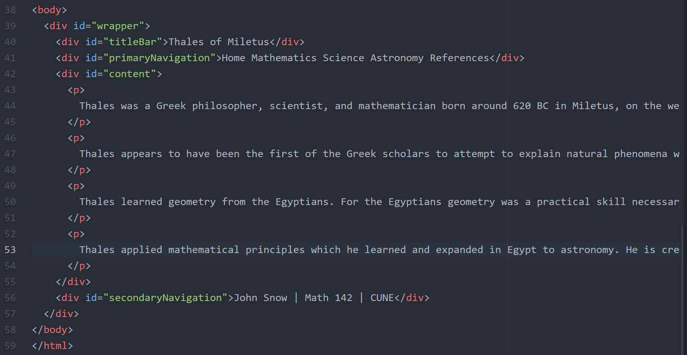
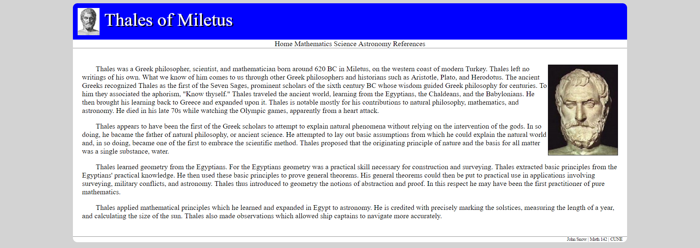

Building a Web Page
Basic HTML Skeleton
In this tutorial, we will build a web page that looks like this:
 This is the main page for a Math History site about Thales of Miletus. Each of the words, Home, Mathematics, Science, Astronomy, and References are links which take you to different pages in the site. A rectangular "tab" around Home is highlighted light gray because you are looking at the main (home) page. On the Mathematics page, the Mathematics tab would be highlighted, and so on.
This is the main page for a Math History site about Thales of Miletus. Each of the words, Home, Mathematics, Science, Astronomy, and References are links which take you to different pages in the site. A rectangular "tab" around Home is highlighted light gray because you are looking at the main (home) page. On the Mathematics page, the Mathematics tab would be highlighted, and so on.
We first create an empty text file with the name index.html. The first line of this file contains a doctype declaration that tells web browsers to interpret the page as HTML:
The contents of an HTML file are divided up into elements - headers, tables, paragraphs, lists, and other things. Elements are delineated with tags. These are pairs of the form <tagname>...</tagname> that wrap around an element. The tag names give the browser information about what to display and how to display it. All of our HTML is contained inside an HTML tag that looks like so:
The content of the HTML tag is divided into two elements, the HEAD section (which contains titles, styles, scripts, and meta information) and the BODY section (which contains most of the content to be displayed). These sections are also accomplished with tags:
Since this is a website about Thales of Miletus, we go ahead and add a title in the head using a tag:
Most web pages are divided into parts that are styled and displayed differently from each other. This partitioning is accomplished mostly through DIV tags. Our web page can be divided naturally into five DIVs as pictured here:
A main DIV that contains the portion of the page is outlined in red. We will call this the wrapper DIV. Inside the wrapper DIV are four other DIVs outlined in green. These are a title DIV, a main navigation DIV, the main content DIV, and a footer or secondary navigation DIV.
Within the BODY of our web page we introduce our five DIVs. Notice how we include within the tag for each DIV an id. This is a name that we can use to refer to the DIV in styles and in scripts.
Notice how the titleBar, primaryNavigation, content, and secondaryNavigation DIVs are contained inside of the wrapper DIV. We will call the structure we have now with these five DIVs the "standard five container structure."
Styling the Divs
Now we add some text to each of our DIVs. We will get all of the text formatting taken care of before we address images and links. For the content DIV, we include only a few words for now. We will fill in the rest later.
 Finally, we have enough content in our HTML file to see something. If we open the file in a browser, it looks like this:
Finally, we have enough content in our HTML file to see something. If we open the file in a browser, it looks like this:
Now we can start adding some style. We first put a tag in the HEAD section to hold style:
The background of our page is light gray. We style the BODY by adding the following code to the STYLE tag.
Notice how all of the style for the BODY is enclosed in braces. The word "body" here in line 6 is a selector. Elements can be selected to style based on tag name (like body), id, or class. We have not yet encountered classes (but we will). Each line of the style entry contains an attribute (in this case, background-color), a colon, a value for the attribute, and then a semicolon. With the background style, our page looks like so:
Next, we add some style to our wrapper DIV. We select the wrapper DIV with #wrapper. The # symbol tells the browser that the selector is an id.
The style for the wrapper DIV includes a background color. The width attribute specifies that the wrapper should be 80% of whatever HTML container contains it. In this case, that means 80% of the BODY width. There is some margin on each side of the wrapper. If we set the margin attribute to auto, the browser will balance the margin on both sides so that the wrapper DIV will be centered. This styling has the following effect:
The wrapper DIV in our example has rounded corners. This is accomplished through the border-radius attribute in the style for the wrapper:
Now we have rounded corners:
We now move on to style titleBar. We add a section to the STYLE for titleBar. We set the background color to blue, the font color (just called color) to white, and the font-size:
These changes suddenly look more dramatic:
Notice how the top corners of our wrapper no longer look rounded. This is because the titleBar DIV has square corners that stick out of (or overflow) the wrapper DIV. To fix this, we add a line to the style for the wrapper DIV that hides overflow:
Now we have rounded corners again.
We will make two more adjustments to the titleBar for now. First, the text is too close to the rounded corners. We fix this by adding some padding to the DIV. Also, the example we are trying to replicate has a slight shadow beneath the text. We accomplish this through the text-shadow attribute.
The text-shadow attribute takes three arguments: an x-offset, a y-offset, and a color. Now our titleBar looks like this:
The titleBar is complete except for an image. We will handle that later.
We now move on to the primaryNavigation DIV. We will address the links in this DIV later. For now, we center the text with the text-align attribute. We also add a 1px gray border to the bottom.
Here is the new and improved primaryNavigation DIV:
We will make more dramatic changes to it later.
We will not do much to the content DIV for a while. For now, we add some padding to it so that it does not brush up too close to the navigation DIVs or the side of the wrapper:
Here you can see the padding in the content DIV:
Now we move on to the secondaryNavigation DIV. We want the text here to be small, and we want it aligned to the right. We also want a border between it and the content DIV above.
And the result:
The secondaryNavigation DIV text seems too close to the rounded wrapper corner, so we add some padding just on the right side:
Now the text is not too close to the corner:
We added the padding only on the right so that the entire DIV would not grow too much.
Paragraphs and Text
We are finally ready to add some text to our content DIV. We simply copy and paste our desired text into the content DIV. There are three paragraphs. We allow them to run off the page here to keep the code looking clean for the tutorial.
The result is not satisfying:
HTML ignores most white space, so the paragraph breaks are invisible.
To break the content text up into paragraphs, we use paragraph or P tags.

This breaks the paragraphs up, but they are still not too pretty:
We at least want to indent our paragraphs. To do so, we add a style entry for P tags which sets the text-indent attribute for and indent.
The content text now looks more like traditional paragraphs.
Adding Images
Now we turn to the images. We can add an image to the titleBar by inserting an IMG tag in the titleBar DIV.
We give the image an id (for styling), and we have to give it a src attribute. This is a path to the source file. Wherever our web page lives, there is a directory called "png" containing our images. The header image is apparently a file named thales.png inside of the png directory. The result is less than satisfactory because we have not yet styled the image.
We add a style entry for the titleBarImage to accomplish two things. First, we set the height of the image so that it is not so tall. Second we set the vertical-align attribute to middle so that the center of the picture is lined up with the baseline of the text.
This is closer to what we want.
Now we add an image of Thales to the first paragraph of the content DIV. We will likely have several small images that we will want on the right side of text in our website, so we give this image a class rather than an id. We use the class name smallRight because we will eventually style the image to be small and to live on the right hand side of the page.
Without style, the image breaks the appearance of the page:
To style every image with class name smallRight, we use the style selector "img.smallRight" this is a tag name, a period, and a class name. We set the height attribute to make the image smallish. The float attribute places the image on the right side of the page and wraps text around it.
This looks better.

Our text seems too close to the image, so we add some padding to the style for img.smallRight.
With the new padding:
Links
Now we can turn to the links. We start with the link in the secondaryNavigation DIV. We want the letters CUNE to be a link to the Concordia University web page. To make this happen, we put the letters CUNE inside A tags. The A tag has an href attribute that is an address to the site being linked. Since the CUNE website does not live in a directory with our website, we have to include the entire url "http://www.cune.edu" in quotes.
The only change in appearance is that the link is now a different color (which we could style if we liked) and is underlined.
Our last major styling task is the primaryNavigation DIV. Each link in the DIV is actually a small DIV that will give the appearance of a tab to highlight when clicked. We add a DIV around each of our links-to-be. We give each DIV a class name of "tab" because they will all be styled almost exactly alike. We also give each DIV an id because each will be highlighted independently also.
When we look at the result, it may be surprising:
 HTML elements have a display attribute. The default value of the display attribute of a DIV is block. That means that the DIV is displayed on a new line of its own extending across whatever container it lives in. Other options for display are none (so that it is not displayed at all), inline (so that text in the block is run together with text around it), and inline-block (so that the DIV is kept together as a block, but that block is placed inline with text around it). We will have to change the display attribute of the tab DIVs when we style them.
HTML elements have a display attribute. The default value of the display attribute of a DIV is block. That means that the DIV is displayed on a new line of its own extending across whatever container it lives in. Other options for display are none (so that it is not displayed at all), inline (so that text in the block is run together with text around it), and inline-block (so that the DIV is kept together as a block, but that block is placed inline with text around it). We will have to change the display attribute of the tab DIVs when we style them.
We add style entries for the tab DIV class with the selector div.tab.
We set two things. First, we change the display to inline-block so that the tabs are all on one line. Next, we set the width to be a percentage a little less than one-fifth of the width of the parent container. We choose one-fifth because there are five tabs.
The tab DIVs stay centered because of the text-align attribute of the primaryNavigation DIV.
Now we turn each of the words in the tab DIVs into links with A tags. Each is given an href which is the name of the file to be linked by that tab.
Notice here that we assume the files being linked are in the same directory as the file index.html that we are constructing, so that we do not need to include the full url.
The links now look like links.
I do not want the links in my tabs underlined. To change the underline, we use a special selector, "div.tab a" which selects all A tags inside of a DIV with class name tab.
We style the links to have no text-decoration. In particular, they will have no underlining.
 This looks better.
This looks better.
External Style Sheets
We want this same STYLE that we are constructing to apply to every page in our website, and we want to be able to make style changes across the website by making changes in one place. We can cut all of the contents of the STYLE tag and put it inside of a file called historyStyle.css which is a style sheet in the same directory as index.html. That file will look like this.
To cause our web pages to use that style sheet, we replace the STYLE element of our HTML file with a LINK tag like so:
Now any file which links this style sheet will be styled the same way our index.html is styled.
We are almost done with our styling. We want the Home tab to be highlighted when we are looking at the Home page. We want the Mathematics tab to be highlighted when we are looking at the Mathematics page, and so on. To accomplish this, we add one STYLE entry to index.html which changes the background color of the homeTab DIV.
This change is only made in index.html so that when index.html is open, the homeTab DIV is highlighted like so:
In math.html, we would change this STYLE entry to affect the mathTab. In science.html, we would affect scienceTab, and so on.
We have built one page in our site, and we have built the style for the site. However, we are not done with the entire site. Our index.html can now become a template. We need to copy the index.html file to math.html, science.html, astro.html, and ref.html. Then the portions of the files which are in red boxes below must be changed to reflect the correct content and to highlight the correct tab.
In the content DIV, we have to place the correct content for whichever page we are working on. The selector for the highlight style also has to be changed to the id of the appropriate tab.